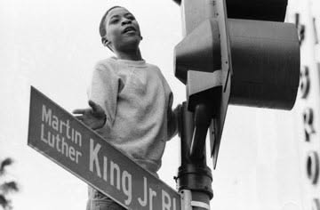

I am very thankful for the contribution we have received so far for this new GoFundMe campaign. While raising money has been going slower than I had hoped, I will continue to try to raise at least $3,000 for seed money to get the website structure intact.
I will keep up this GoFundMe campaign, and will continue to post updates as I go. I will also begin to post some of my photos as a visual sample of what I am referring to.

If you are interested please click on the GoFundMe campaign link below.
— Lisa